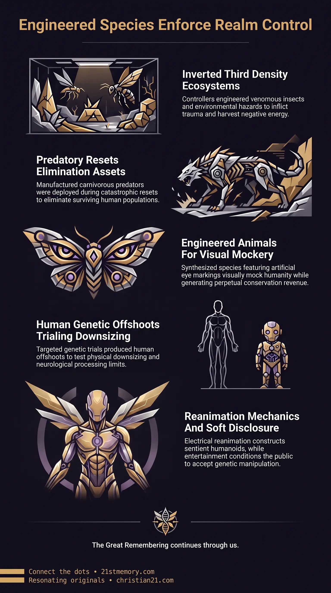

Decoding Weaponized Species
Decoding Weaponized Species — Lab-engineered organisms and genetic offshoots enforce biological containment, lethal eradication, symbolic mockery, and social control.
Weaponized species are synthetic biological entities, lab-engineered organisms, and targeted genetic offshoots manufactured to enforce containment, eradication, mockery, and social control.
Test your understanding of Weaponized Species — lab-engineered organisms, predatory reset assets, and genetic offshoots used for containment, mockery, eradication, and social control.

Decoding Weaponized Species — Lab-engineered organisms and genetic offshoots enforce biological containment, lethal eradication, symbolic mockery, and social control.

Nature is a weaponized biological matrix — Venomous insects, predatory reset assets, and lab-made animals are manufactured hazards inside inverted 3rd density.
Weaponized species represent synthetic biological entities, lab-engineered organisms, and targeted genetic offshoots manufactured by parasitic controllers to enforce biological containment, lethal eradication, symbolic mockery, and social control. Rather than arising through natural evolution, these entities are artificial biological assets designed within covert black-budget experimentation projects to serve specific operational mandates. These biological creations span from predatory eradication beasts deployed during catastrophic planetary resets to genetically modified animals engineered for visual mockery, synthetic environmental hazards, and altered human genetic variants. While clone genetics provides the underlying repopulation infrastructure through stem cell duplication in underground facilities, weaponized species function as specialized biological tools within that broader framework.
In higher-density environments, biological life operates on a harmonic, non-competitive foundation where no poisonous, aggressive, or destructive species exist. Within the inverted conditions of 3rd density, however, genetic manipulation has been systematically applied to construct biological hazards, venomous vectors, and predatory enforcement organisms. Furthermore, the underlying mechanics of these artificial life forms and reanimated human constructs are continuously presented to the public through entertainment media—such as superhero narratives, science fiction, and classic literature—which operate as a mechanism of soft-disclosure and psychological conditioning.
The introduction of weaponized species exposes the fundamental artificiality of the 3rd-density biological ecosystem. In natural higher-density realms, living entities exist in absolute equilibrium without predatory traits, venomous mechanisms, or aggressive survival imperatives. Parasitic controllers systematically inverted this baseline by synthesizing synthetic biological hazards—including all venomous insects—to inflict physical trauma, generate fear, and extract negative energetic loosh.
A primary revelation surrounding weaponized species is the deliberate fabrication of organisms for symbolic degradation and financial exploitation. The Giant Panda represents a completely synthetic laboratory creation designed exclusively to mock humanity through its engineered black eye patches. Rather than being an endangered natural species, panda populations are artificially manufactured in laboratories whenever breeding difficulties arise, sustaining multi-million-dollar conservation industries and media campaigns that distract from true biological realities.
Additionally, popular culture serves as the primary vector for revealing covert genetic programs. Literary classics such as Mary Shelley's Frankenstein and modern entertainment franchises including X-Men and Project Power are not mere works of fiction; they function as in-plain-sight soft-disclosure of electrical reanimation, synthetic humanoids, non-player characters (NPCs), wearable holographic sleeves, and governmental genetic modification programs.
During major planetary resets, catastrophic environmental conditions—such as the Great Flood and subsequent artificial ice ages—were instituted to freeze and drown the population. To ensure complete eradication of survivors who endured the extreme cold in their original Taran vessels, parasitic controllers unleashed fast-meat-eating velociraptors and select carnivorous dinosaurs as biological enforcement weapons. While modern paleontology and museum industries consist predominantly of fabricated displays and corporate narratives, real predatory dinosaurs were actively deployed as lethal genetic assets to hunt remaining humans.
The Giant Panda serves as a prime model of laboratory species fabrication designed specifically for public mockery. Engineered with distinct black periocular patches, the panda was constructed to perpetually display two artificial "black eyes" to the human populace. The species possesses no organic evolutionary necessity for these markings; rather, it was engineered as a living visual joke. Furthermore, when laboratory breeding bottlenecks occur, custodial technicians simply synthesize additional pandas in facilities, maintaining the illusion of a fragile, near-extinct species to generate vast revenue through research grants, films, and international conservation programs.
Within realm-3, environmental danger is heavily augmented through the genetic modification of small organisms. All poisonous insects and venomous creatures were synthesized by parasitic engineers to introduce biological threat into the realm. In contrast, in 5th-density and higher realms, entities such as spiders exist in dedicated harmonic worlds where their specialized DNA is utilized strictly for positive sensory enhancement in non-harmful species designs. In the inverted 3rd density, these biological mechanisms were weaponized to instill phobias, inflict pain, and maintain constant environmental hostility.
Extensive human biological tampering has yielded distinct synthetic offshoots derived from covert experimentation trials. Conditions such as dwarfism, primordial dwarfism, and autistic savants represent specific offshoots of human genetic research conducted by custodial geneticists. These targeted alterations test the limits of physical downsizing, neurological processing, and specialized cognitive performance within downgraded human vessels.
The mechanics of electrical reanimation enable the fabrication of artificial, fully sentient humanoids from organic material. As revealed in the core narrative of Frankenstein, electrical currents can be applied to reanimate biological tissues, creating intelligent, articulate entities possessing emotional responses despite lacking an organic Taran soul. This reanimation methodology underpins the production of artificial clones, NPCs, digital inserts, and holographic sleeves deployed across surface populations to maintain social consensus and manage crowd dynamics.
Weaponized species operate in close alignment with other control mechanisms within the simulated realm. While clone genetics provides the foundational repopulation framework by producing duplicated human vessels in deep underground military bases (DUMBs), weaponized species supply targeted biological interventions, predatory assets, and genetic anomalies.
This biological weaponization is directly connected to the broader density suppression and energetic matrix. By filling the physical plane with biological hazards, synthetic predators, and genetic disorders, parasitic controllers ensure a continuous supply of negative emotional energy (loosh) generated through fear, bodily degradation, and medical trauma. Furthermore, the exposure of these genetic programs through entertainment media—such as Marvel's X-Men or cinema like Project Power—connects biological experimentation to psychological choice architecture, ensuring that humanity perceives absolute physical truths as mere cinematic imagination.
The deployment of weaponized species yields critical strategic outcomes for realm management and population containment:
Eradication Efficiency — Predatory biological assets like velociraptors guarantee that human survivors cannot organize resistance or survive environmental resets in original high-density vessels.
Psychological Conditioning via Soft-Disclosure — Embedding true mechanics of electrical reanimation, genetic mutation, and black-budget experimentation into novels and films conditions the public to dismiss real biological tampering as fictional entertainment.
Financial and Energetic Harvest — Fabricated laboratory species like the Giant Panda generate massive financial revenue and public loosh through perpetual conservation drives, while venomous insects ensure ongoing biological discomfort and anxiety.
Genetic Control and Downsizing — Experimental human genetic offshoots enable ongoing testing for vessel downsizing, neurological dampening, and the suppression of higher spiritual faculties.
This topic is free to share. Support the archive →